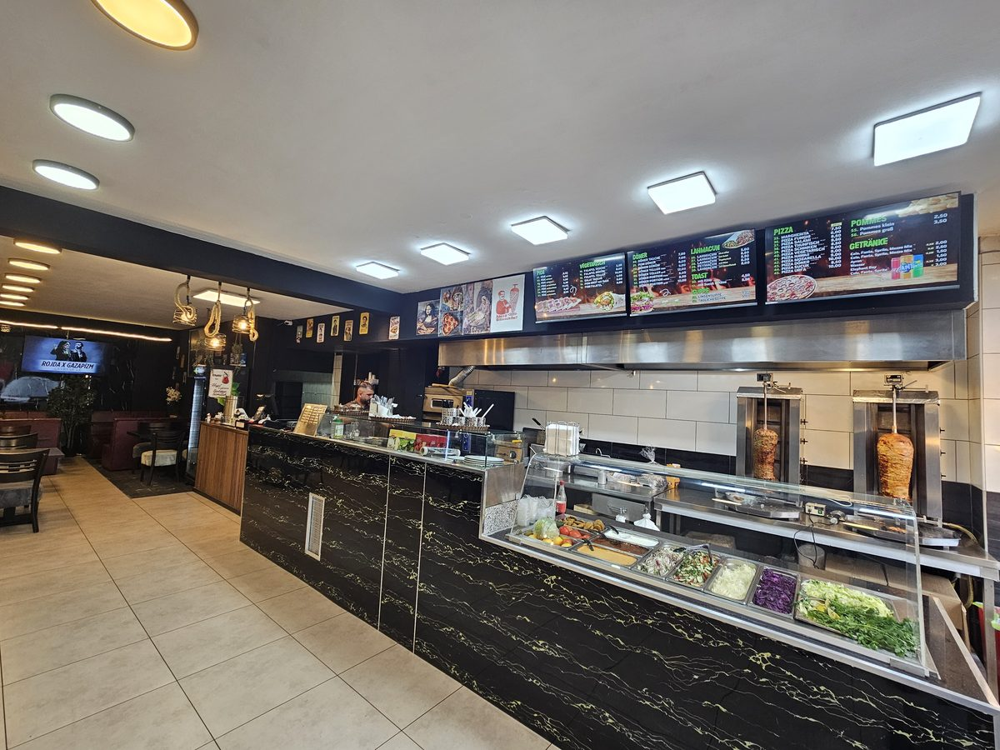
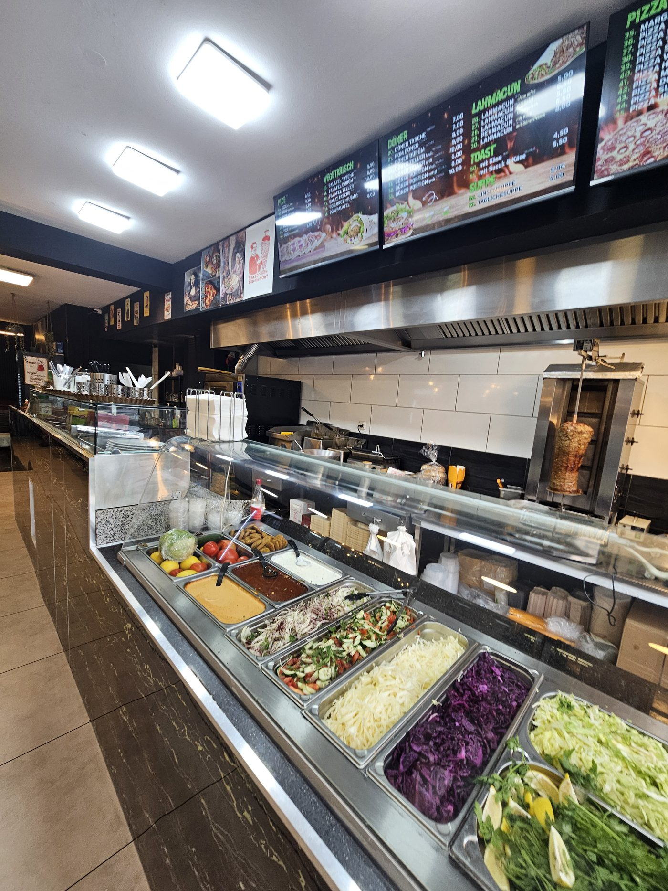
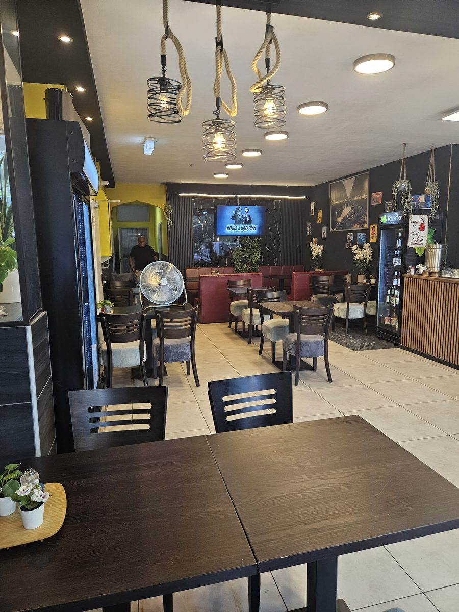
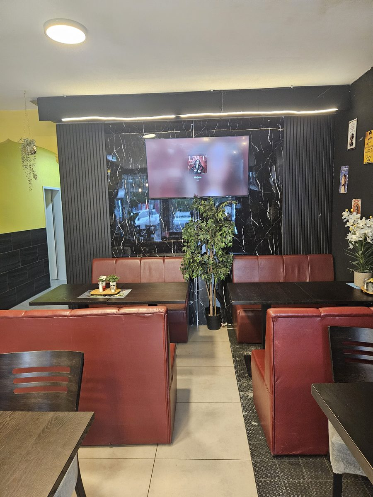
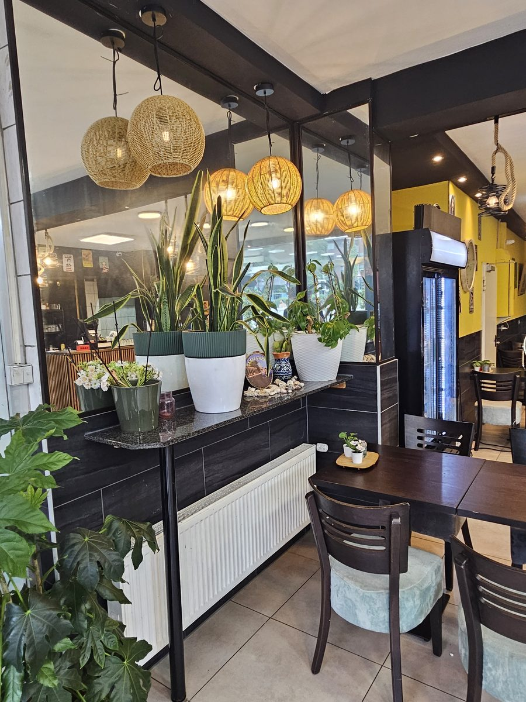
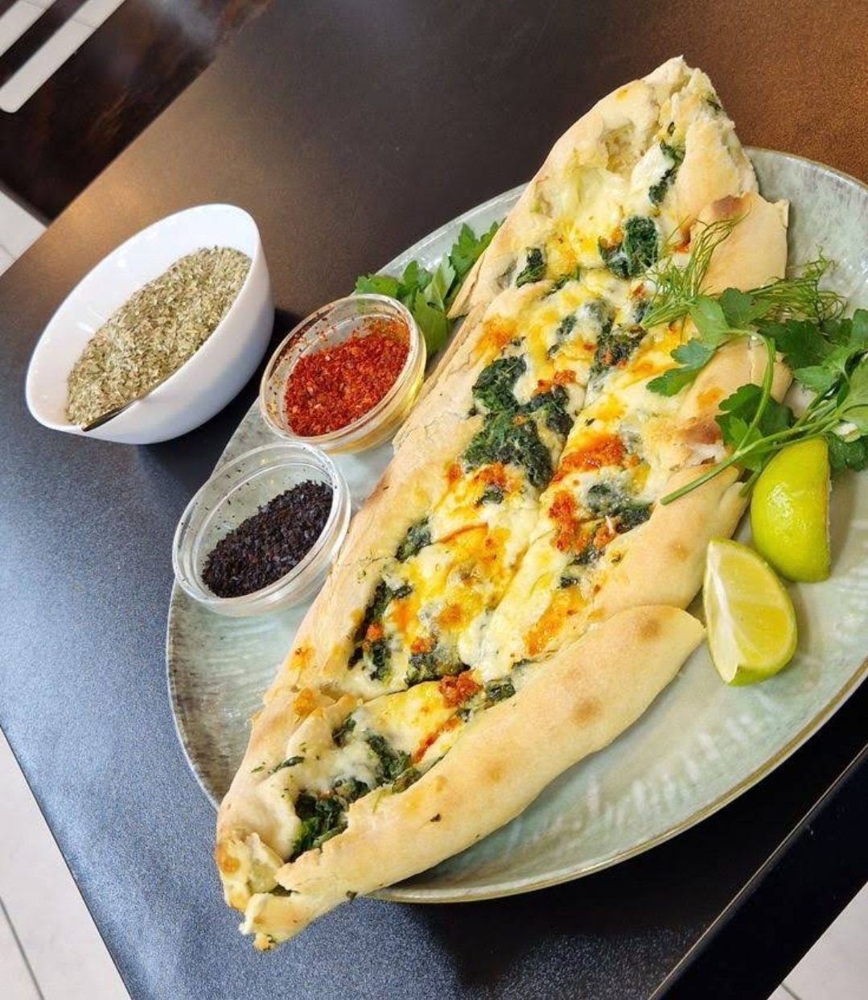
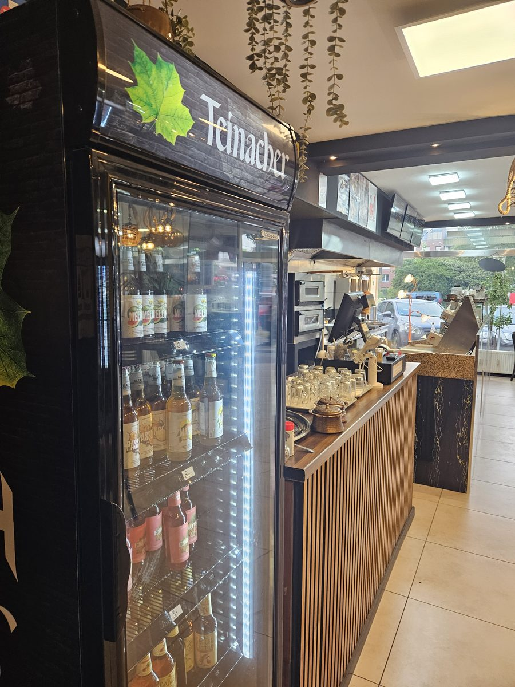

Orijinal Urfa usulü · fırından taze
Essah Urfa Lahmacun: Düsseldorf’ta geleneksel, elde açılan lahmacun
İnce hamur, bol harç, doğrudan Düsseldorf-Wersten’den. Yıllardır Kölner Landstraße’de.
Düsseldorf-Wersten’den lahmacun – olması gerektiği gibi, el yapımı
Düsseldorf-Wersten’in tam ortasında, Kölner Landstraße üzerinde, Essah Urfa’da her gün geleneksel aile tarifimizle taze lahmacun pişiriyoruz. Hamurumuz her gün yeniden yoğrulur ve elde incecik açılır, baharatlı harcı taze yeşilliklerle hazırlanır – hazır fast food değil, tadına varılan bir zanaat.
Düsseldorf’un güneyinde gerçek lahmacun arayanlar bizde fırın lezzetinden fazlasını bulur: Menümüz klasik dönerden pideye, lahmacun usulü pizzaya kadar uzanır – herkesin damak tadına uygun bir şey var. İster paket ister burada oturarak: Her şeyin önceden hazırlanıp ısıtılmadan, taze yapılmasına özen gösteriyoruz.
Wersten’de küçük bir aile işletmesi olarak hem mahalleden gelen müdavimlerimizi hem de güzel bir lahmacun için Düsseldorf’un diğer semtlerinden gelen herkesi memnuniyetle ağırlıyoruz. Bizde ayakta yemek zorunda değilsiniz: Rahat oturma yerlerimizde yemeğinizi huzurla yiyebilir, yanında taze bir ayran ya da soğuk bir içecek içebilirsiniz. İster Wersten’den eve dönerken uğrayın ister Düsseldorf’un güneyinden planlı gelin: Buyurun, arayın ya da doğrudan içeri girin.

Her gün taze
Hamur ve harç her gün yeniden hazırlanır – hiçbir şey günlerce soğuk depoda beklemez.
Aile tarifi
Harcımızın baharat karışımı nesilden nesile aktarılıyor.
Geniş seçenek
Lahmacunun yanı sıra döner, pide, pizza, tost, çorba ve içecekler – her damak tadına göre.
Uygun fiyatlar
Dürüst yemek, doğru fiyat – ister paket ister yerinde.
Hamurdan sofraya
Hamuru açmak
Lahmacun hamuru her gün taze yoğrulur ve elde incecik açılır.
Harcı hazırlamak
Kıymalı harç, aile tarifimize göre taze yeşillik ve baharatlarla tatlandırılır.
Fırında pişirmek
Her lahmacun tek tek fırına girer; kenarı çıtır, harcı sulu olana kadar pişer.
Dükkândan kareler






Misafirlerimiz ne diyor
5 yıldızlı yorumlar sonuna kadar hak edilmiş! Dürüm döner de “normal” döner de çok lezzetliydi – bol taze et, taze sebze ve çok lezzetli bir sos. Dükkân sahibi çok güler yüzlüydü, hatta bize ikram olarak Türk çayı verdi. İçeride rahat rahat oturabiliyorsunuz. Benim için son zamanların en lezzetli döneri – hem tavuk hem dana. Fiyatlar da iyi.
Her şey taze hazırlanıyor ve çok lezzetli. Ancak pizzalar İtalyan usulü değil, lahmacun usulü. Çok ilgili ve nazik hizmet – seve seve tekrar gelirim!
Aman Allahım, bundan iyisi olamaz – rüya gibi, dünyanın en iyi döneri! İki kez gittim. Perşembe günleri 5,99 € yerine 4,99 €, bir euro farkla ayran da kesinlikle alınır. Annem ve kardeşimle gittim, sonra küçük yeğenim için bir kez daha – en sonunda ablam ve kuzenim de mutlaka istedi.
Çok iyi döner – dana ya da tavuk, fiyat-performans harika, dükkân sahibi çok nazik. Wersten’de kesinlikle tavsiye ederim.
Ağustos 2025’te ilk kez gittim, bir tavuk bir de dana döner aldım. İkisi de çok lezzetliydi. Ekmek biraz daha uzun kızartılabilirdi ama onun dışında lezzetli bir döner.
Bilmekte fayda var
Yerinde yemek yiyebilir miyim?
Evet, rahat oturma yerlerimiz var – sokağa bakan pencere kenarında da.
Vejetaryen yemekleriniz var mı?
Tabii. Örneğin ekmek arası falafel, dürüm falafel, falafel tabağı ya da vejetaryen lahmacun.
Sadece lahmacun mu var?
Hayır. Lahmacunun yanı sıra döner, pide, pizza, tost, çorba, patates kızartması ve içecekler de var.
Size en hızlı nasıl ulaşırım?
Bizi 0211 97170255 numarasından arayın ya da doğrudan Düsseldorf’taki Kölner Landstraße 263 adresine uğrayın.
Bizi ziyaret edin
- Adres
- Kölner Landstraße 263
40591 Düsseldorf - Telefon
- 0211 97170255
- Çalışma saatleri
-
Pzt – Per: 11:00 – 01:00
Cum – Cmt: 11:00 – 02:00
Paz: 12:00 – 01:00 - @essah_urfa
Haritayı yüklediğinizde Google sunucularına bağlanılır ve IP adresiniz Google’a iletilir. Ayrıntılar gizlilik politikamızda (Almanca).